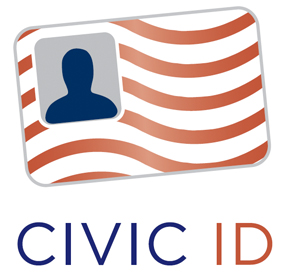

online democracy
ICF and OIDF Launch Open Identity Exchange
 San Francisco, CA -- After a year-long collaboration, the Information Card Foundation (ICF) was pleased to join the OpenID Foundation (OIDF) in announcing the launch of the Open Identity Exchange (OIX) at the RSA 2010 Conference.
San Francisco, CA -- After a year-long collaboration, the Information Card Foundation (ICF) was pleased to join the OpenID Foundation (OIDF) in announcing the launch of the Open Identity Exchange (OIX) at the RSA 2010 Conference.
OIX is the first open identity trust framework provider—a provider of certification frameworks for the providers and consumers of open identity credentials such as Information Cards and OpenID. OIX is based on a new approach to creating wide-area trust networks on the Internet called the Open Identity Trust Framework (OITF) Model. ICF, OIDF, and OIX have jointly published a white paper describing this model, including 12 "Principles of Openness" followed by OITF providers.
"This is a major step forward for the open identity industry," said ICF Executive Director Drummond Reed, who will also serve as the initial Executive Director of OIX. "To serve governments and other online communities that have requirements for specific levels of identity assurance, the industry needed to create a certification program for OpenID and Information Card providers. Now we have done that, and we have done it in a manner consistent with the open standards and open market approach upon which our technologies are based."
ICF and OIDF to Present Open Trust Framework at OASIS Identity Management 2009 Conference
ICF Executive Director Drummond Reed and OpenID Foundation Executive Director Don Thibeau will present the foundation’s joint Open Trust Framework at the OASIS Identity Management 2009 conference tomorrow at the NIST headquarters in Gaithersburg, Maryland. The theme of the conference is Transparent Government: Risks, Rewards, and Repercussions.
The Open Trust Framework, summarized in the OIDF/ICF joint white paper Open Trust Frameworks for Open Government, is a mechanism that enables relying parties (the websites and services that accept open identity credentials such as OpenID or Information Cards from individuals) to verify that identity providers (the third parties providing such credentials on behalf of the individual) are certified to provide those credentials at the level of assurance (LOA) the relying party requires.
In the case of U.S. government, for example, there are four LOAs defined by NIST and the Office of Management and Budget (OMB), each with its own level of identity proofing, security, and privacy requirements. With the Open Trust Framework, U.S. government websites will be able to determine if a particular identity credential meeting the ICAM OpenID 2.0 profile or IMI Information Card 1.0 profile at a particular LOA was issued by an identity provider certified to meet the U.S. government requirements at that LOA.
Information Cards Facilitate Grassroots Democracy

Information Cards can Authenticate Online Petitioners While Protecting Anonymity
- In 1215, King John signed the Magna Carta, which recognized the right of the barons to petition the crown.
- In 1775 Thomas Paine wrote in Common Sense that "... frequent interchange ...between the electors and the elected ... will establish a common interest with every part of the community ... they will mutually and naturally support each other, and on this depends the strength of government, and the happiness of the governed."
- By 1789, Founders of the United States embedded the right to petition into the Constitution in the First Amendment: "Congress shall make no law ... abridging ... the right of the people ... to petition the Government for a redress of grievances."
Today petitioning has become an instrument of mass politics, designed to make a point, not a plea. To quote the First Amendment Center:
"Petitioning" has come to signify any nonviolent, legal means of encouraging or disapproving government action. The direct appeal and individualized response that once marked petitioning belong to a more organic past when leaders knew petitioners by name. No branch of the government today is equipped to provide such personal attention.
Sites like The Petition Site provide tools to create online petitions, but you need to fill out the usual form -- name, address, etc. Not only is this work, but by signing a petition, you may create a record that you later regret. To avoid this, you might choose to enter a false address (Beverly Hills 90210). Verifying signatories of an online petition is a laborious and lengthy process.